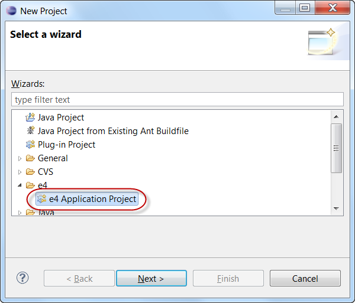
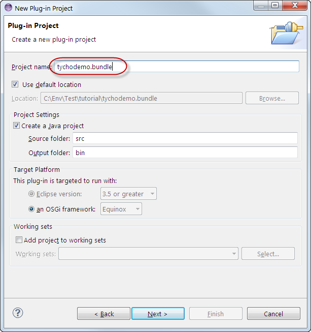
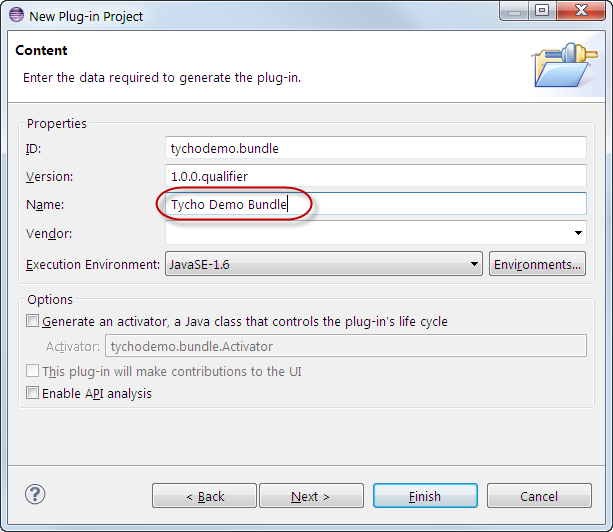
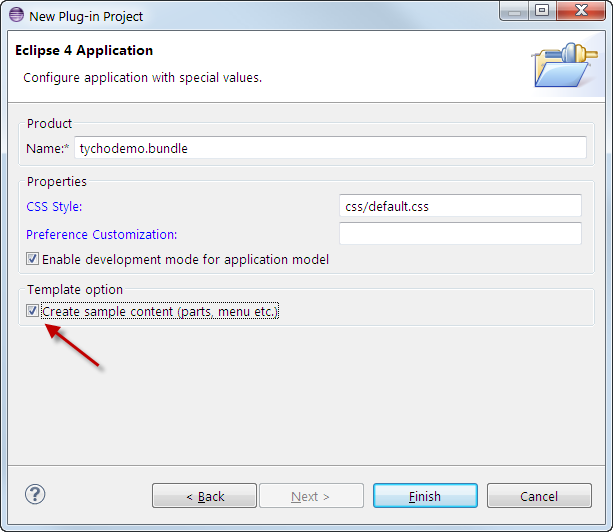
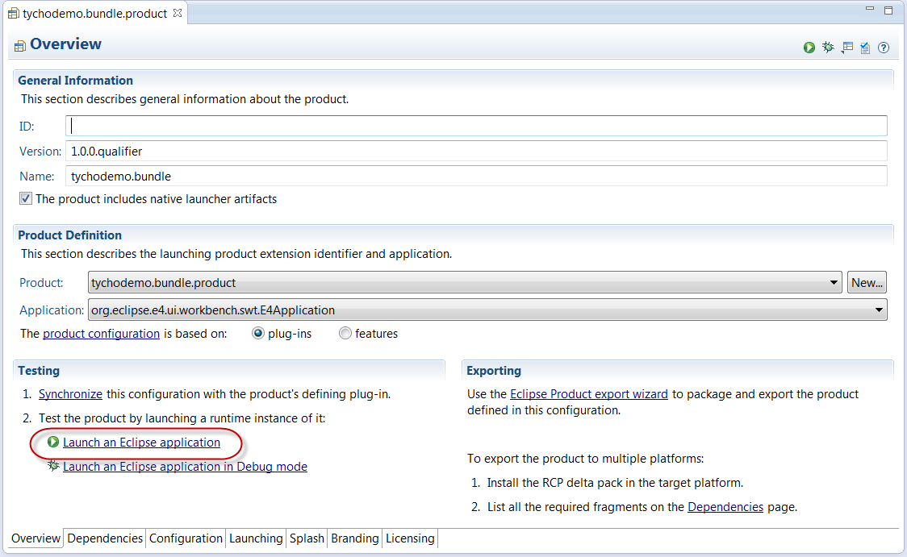
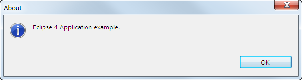
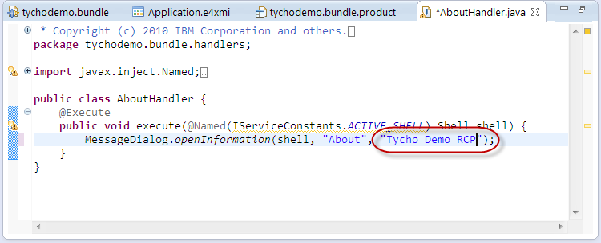
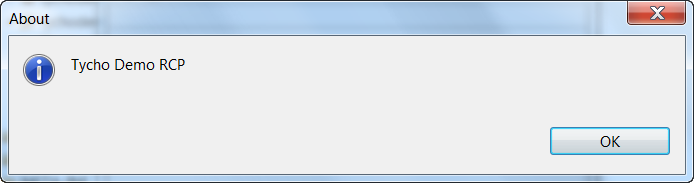

- File > New > Project > Eclipse 4 > Eclipse 4 Application Project
 - Enter tychodemo.bundle as project name
 - On the Content page, enter the name Tycho Demo Bundle. Click Next >
 - On the Eclipse 4 Application page, select Create sample content and press Finish

- Open the product definition file tychodemo.bundle.product
- On the Overview tab, click on Launch an Eclipse application
 - You should see an RCP application window with title tychodemo.bundle

- Open the Help > About menu. A dialog box with the text Eclipse 4 Application example is shown:

- Open tychodemo.bundle.handlers.AboutHandler and change the about text from "Eclipse 4 Application example." to "Tycho Demo RCP"
 - Open tychodemo.bundle.product and launch the Eclipse application again. Open the Help > About dialog. You should see your message now:
